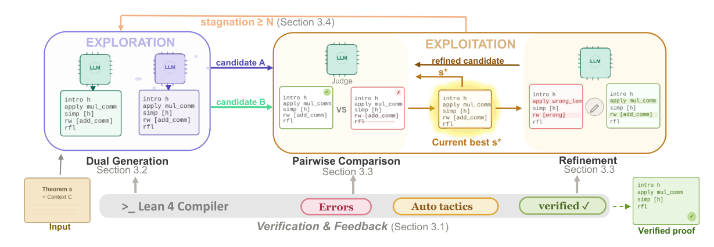
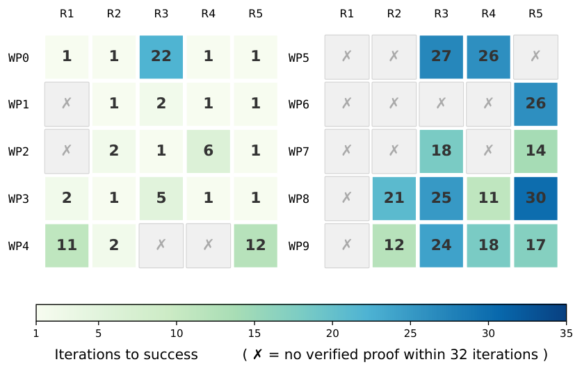

Builds an LLM proof-search framework that uses Lean 4 compiler feedback to refine whole proofs, evaluated on Lean projects from miniCTX-v2.
Abstract
Theorem proving in real-world Lean 4 projects is challenging because proofs often depend on project-specific context. While iterative refinement can use compiler errors to repair failed proofs, reusing failed attempts requires careful search control: some proofs provide better starting points than others, and later revisions may degrade a partially correct proof. We propose a compiler-guided proof search framework that balances exploration and exploitation. It explores diverse starting points through dual-model generation and stagnation-triggered resampling, while exploiting promising proof states through current-best refinement guided by compiler-grounded pairwise comparison. Experiments on seven real-world Lean 4 projects from miniCTX-v2 show that our method achieves a better effectiveness–efficiency tradeoff than pass@k baselines. Within the pass@32 budget, our method improves average pass rate by 12.8 percentage points while reducing LLM calls by 21.9%.
Problem
Proving theorems inside real-world Lean 4 projects depends on project-specific context such as local definitions and lemmas. Independent pass@k sampling discards failed proofs that contain partial progress, and naive iterative refinement can make a partially correct proof worse.
Approach
A compiler-guided search keeps a single current-best proof. For exploration, it draws candidates from two models, a generalist reasoning model and a Lean-specialized prover, and resamples when refinement stalls for N rounds. For exploitation, it repairs the current-best proof using compiler errors. An LLM judge makes compiler-grounded pairwise comparisons to decide whether each repaired proposal replaces the current best.

Figure 1: Overview of our framework. Exploration (left) generates two diverse candidates via a generalist and a specialist. Exploitation (right) maintains a single current-best proof s^{*} and drives it toward verification: each repair produces a proposal , and an LLM judge decides whether to accept it. When refinement stagnates for N consecutive rounds, the system re-enters exploration and draws
Results
On seven Lean 4 projects from miniCTX-v2, the method improves average pass rate by 12.8 percentage points over the base models' average pass@32 while using 21.9% fewer LLM calls. Ablations show that the specialist model, autosolve, resampling, and pairwise comparison each contribute to performance.

Figure 2: Empirical refinement results of one theorem with different initial attempts. One theorem, 10 wrong proofs (WP) as starting points (rows), each evaluated with 5 independent refinement runs (columns) with a 32-iteration budget. Cells show iterations to success; \times marks failure. Theorem: Set_EAnnulus_oc_subset_co in carleson . More examples can be found in Figure 9 and Figure 10 in App
Method
Carleson
FLT
HepLean
Avg.
Gemini-2.5-Flash
44.00
35.29
38.00
44.18
DeepSeek-Prover-v2
42.00
47.06
42.00
46.72
Ours
48.00
50.00
54.00
52.86
Pass rate (%) on miniCTX-v2 test split (selected projects and average)